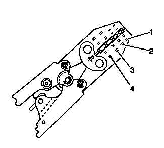
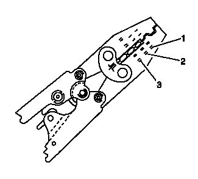
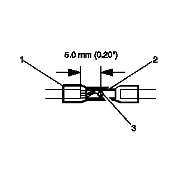
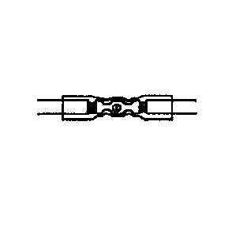
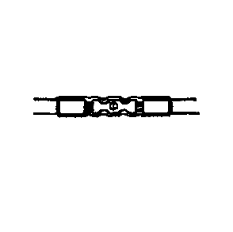
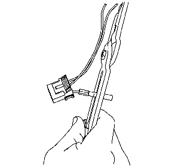
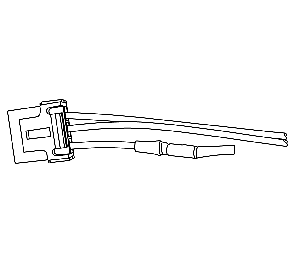

线间修理－发动机控制和燃油
- • EL-38125-10接头套管压接工具（非 GMNA）
- • J-38125-5A加热枪专用工具
- • J-38125-8接头套管压接工具 (GMNA)
专用工具
有关当地同等工具的信息，参见
专用工具。
危险
危险：为降低人身伤害的风险，避免高电压与搭铁导通或系统高阻抗消失，不要试图修复损坏的高压导线、连接器或端子。高压同轴电缆是不可维修的。决不要试图维修同轴电缆。必须更换整个电缆/线束或部件为了保持系统的完整性和个人安全，不要试图修复高压导线、电缆或端子。在高压电路上执行该程序可能导致重伤或死亡。
注意:如果内置与变速器的线束损坏，则必须更换线束。使用接头套管尝试修理内部变速器线路、连接器或端子可能导致性能问题。
注意:不要分离车门线束护环内的线路。
注意:Duraseal 接头套管有以下2 项重要功能：
- • 专用热缩套管，可为接头提供密封。热缩套管内含有密封胶。
- • 线芯的局部冷压（压花）方式使灵敏的低能量电路能良好接触，接触电阻小。
除了高电压和特种电缆外，所有类型的绝缘层仅使用DuraSeal接头套管来形成接头。在具有特殊要求（如防潮密封）的部位应使用DuraSeal接头套管。按照以下说明，采用DuraSeal接头套管连接铜芯导线。
接头套管的选择
|
接头套管的颜色
|
压接工具压接嵌套的颜色
|
导线规格，平方毫米/（美国导线规格）
|
|
|---|---|---|---|
|
3个压接嵌套
|
4个压接嵌套
|
||
|
橙红色（黄色－粉红色）
19300089
|
红色 (1) 或红色/绿色 (1)
|
红色（2）
|
0.22－0.8/(18－26)
|
|
蓝色
19168447
|
蓝色（2）
|
蓝色（3）
|
1.0－2.0/(14－16)
|
|
黄色
19168448
|
黄色（3）
|
黄色（4）
|
3.0－5.0/(10－12)
|
-
1.拆下胶带，解开线束：注意:必须按所列顺序执行以下程序。如有线芯损坏，应重复本程序。导线剥皮后，线芯应完好无损。
- • 用市售裁缝剪剪开胶带以解开线束，以免损坏导线绝缘层。
- • 除乙烯－四氟乙烯共聚物（特氟龙）和同轴电缆外，其它所有类型的绝缘层上都可采用DuraSeal接头套管。
- • 当2 根以上的导线对接时，切勿采用压接法和 Duraseal 接头套管来形成接头。
- 2.从线束上尽可能少地切除导线。可能需要一段预留线，以便改变接头位置。
调整接头的位置，使每个接头距离其它接头、线束分支或连接器至少40 mm (1.5 in)。
- 3.剥除绝缘层：
- • 向现有线束接入一段导线时，应使用与原来导线尺寸相同的导线。
- • 按以下方法之一，查明正确的导线尺寸：
- – 在图上找到线束，并将公制尺寸转换为当地的导线线规尺寸。
- – 如果不能确定导线尺寸，从剥线钳最大的开口处开始逐渐处理至较小的开口处，直到能干净地剥除绝缘层。
- • 将需要连接的导线端部绝缘层剥开约5.0 mm (0.20 in)。
- • 切勿割伤或割断线芯。检查已剥皮导线的线芯是否割伤或割断。
- • 如果导线损坏，将损坏段截去后重复本程序。
- 4.对于高温接线，将一段高温SCT1热缩管沿要编接的导线长度向下滑动。确保热缩管不会干扰接头程序。
- 5.根据导线尺寸，选择合适的DuraSeal接头套管。参见上面维修程序起始处的表格，了解DuraSeal接头套管和压接工具嵌套的颜色编码。
-
6.EL-38125-10接头套管压接工具有四个压接嵌套。最大的压接嵌套 (4) 用来压接10和12号导线。第二大的压接嵌套 (3) 用来压接14和16号导线。第三大的压接嵌套 (2) 用来压接18和20号导线。最小的压接嵌套 (1) 用来压接22至26号导线。压接槽参考压接工具嵌套颜色下的表（位置较上）。
-
7.J-38125-8接头套管压接工具有三个压接嵌套。最大的压接嵌套 (3) 用来压接10和12号导线。第二大的压接嵌套 (2) 用来压接14和16号导线。最小的压接嵌套 (1) 用来压接18至20号导线。压接槽参考压接工具嵌套颜色下的表（位置较上）。
- 8.用接头套管压接工具在接头套管压接工具合适颜色的嵌套中定位DuraSeal接头套管。对于四件套压接嵌套工具，使用三个最大的压接嵌套来压接接头套管。对于三件套压接嵌套工具，使用所有的三个压接嵌套来压接接头套管。使用四件套或三件套压接工具图（上）和表（较上）使接头套管和正确的压接嵌套匹配。压接工具图插图编号与表中数字相符（压接工具嵌套颜色下方）。
-
9.将DuraSeal接头套管放入嵌套中。确保压接点落在内管端部和挡块的中间。该套管在内管 (2) 中央有一个挡块 (3)，防止导线 (1) 滑入。轻微夹紧压接钳手柄，将DuraSeal接头套管牢固地固定在合适的嵌套中。
-
10.将导线插入接头套管内管，直到导线碰到内管挡块。参见折叠导线的修理，以便接合0.35 毫米或更细（22、24和26线规尺寸）的导线以及接合不同线规尺寸的导线。
- 11.使劲夹紧压接钳手柄，直到手一松开，压接钳手柄就能够打开。
压接钳手柄不会重新打开，除非在DuraSeal接头套管上施加了足够的压力。对接头的另一端重复步骤 4和6。
-
12.用加热枪加热内管的压接部位。
- 13.从中部开始，然后逐渐移动加热枪至套管的开口端：
- • 沿绝缘层加热后，套管会完全收缩。
- • 收缩到一定程度后，套管端部会流出少量密封胶。
全天候封装™ 导线的修理
注意:在交付时，某些替换用引线连接器的连接器内可能未安装终端引线。对于全天候封装™连接器，包装内的所有终端引线应装入连接器。如果连接器端视图显示某个端子未被占用，则表示需要安装多余的终端引线，并使用 DuraSeal 接头套管密封端部，然后用胶带固定到线束中。
- 1.将导线插入接头套管内管，直到导线碰到内管挡块。参见折叠导线的修理，以便接合0.35 毫米或更细（22、24和26线规尺寸）的导线以及接合不同线规尺寸的导线。

- 2.使劲夹紧压接钳手柄，直到手一松开，压接钳手柄就能够打开。
压接钳手柄不会重新打开，除非在DuraSeal接头套管上施加了足够的压力。用一只手握住 DuraSEAL，然后轻轻拉动导线以确保已将其压接到 DuraSeal 中。
- 3.用加热枪加热内管的压接部位。
-
4.从中部开始，然后逐渐移动加热枪至套管的开口端：
- • 沿绝缘层加热后，套管会完全收缩。
- • 收缩到一定程度后，套管端部会流出少量密封胶。
-
5.用胶带将多余的终端引线固定到线束中。

高温线路修理
用下列程序执行高温接线修理：
- 1.将高温SCT1热缩管放在DuraSeal接头套管中部。
- 2.用加热枪加热高温热缩管。
- 3.逐渐将加热枪从中央移动至套管开口端：
- • 沿绝缘层加热后，套管会完全收缩。
- • 收缩到一定程度后，套管端部会流出少量密封胶。
- 4.更换在维修时拆下的所有抗热胶带和卡夹。